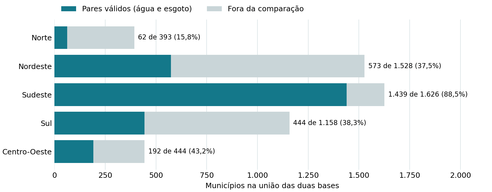
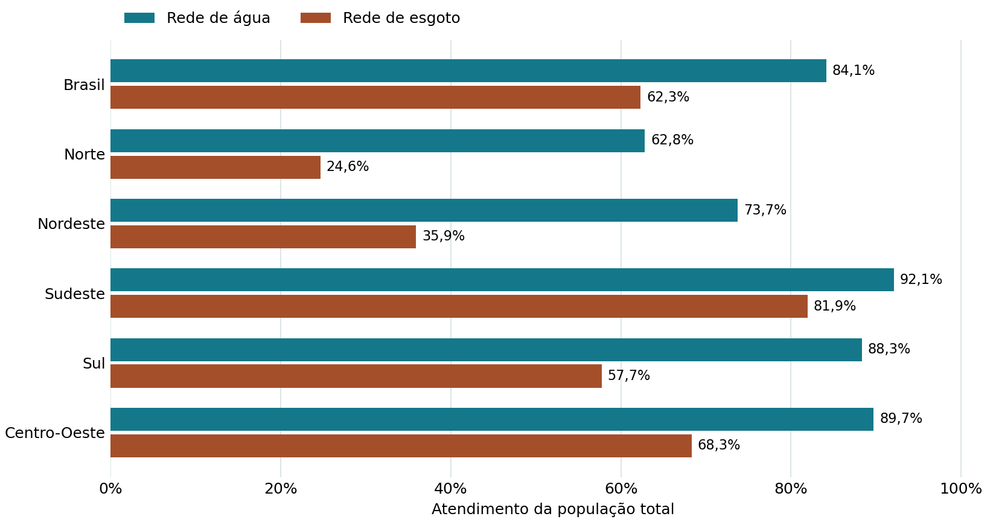
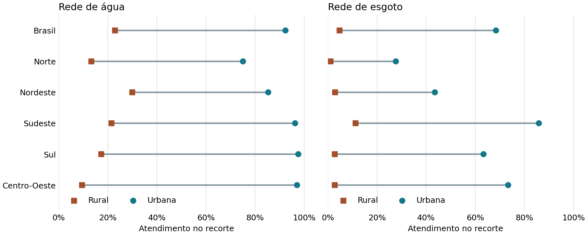
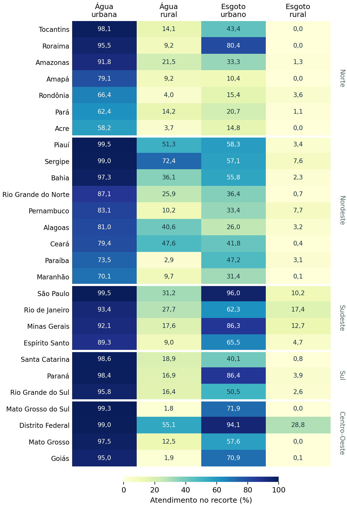
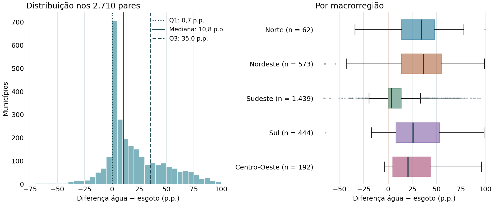

Resumo
O acesso à água por rede e a coleta de esgoto avançam em ritmos diferentes no Brasil, e a legislação fixa metas de 99% e 90% de atendimento até 2033. Este estudo compara os dois indicadores do Sistema Nacional de Informações em Saneamento Básico (SINISA 2025, ano de referência 2024) em três escalas: macrorregiões e unidades federativas, áreas urbanas e rurais e municípios. Um pipeline em Python com pandas lê quatro planilhas oficiais, valida os arquivos por hash, registra os valores não calculados sem imputá-los e cruza os municípios pelo código IBGE. No consolidado nacional, a rede de água atende 84,14% da população de referência e a de esgoto, 62,30%, diferença de 21,84 pontos percentuais. A diferença chega a 38,16 pontos no Norte e a 62,00 no Amapá. Nenhuma unidade federativa alcança 99% em água, e só São Paulo e o Distrito Federal passam de 90% em esgoto. No meio rural, a coleta por rede fica abaixo de 5% em 21 unidades federativas. Entre 2.710 municípios com os dois indicadores válidos, a diferença mediana é de 10,82 pontos, com desvio-padrão de 26,42 e correlação de Pearson de 0,493. Em 334 municípios o esgoto supera a água, e em 73,7% deles os dois serviços têm prestadores de naturezas distintas. A amostra pareada concentra-se no Sudeste, o que limita a generalização dos resultados municipais.
Palavras-chave — saneamento básico, abastecimento de água, esgotamento sanitário, desigualdade territorial, SINISA, dados abertos.
- 21,84 p.p.separam água (84,14%) e esgoto (62,30%) no Brasil
- 0 de 27UFs alcançam 99% em água; duas passam de 90% em esgoto
- 4,75%é o atendimento rural por rede de esgoto no país
- 2.710municípios têm os dois indicadores válidos, 53,1% deles no Sudeste
1. Introdução
Água tratada na torneira e esgoto coletado são serviços que deveriam chegar juntos. Quando a rede de água chega e a de esgoto não, o volume consumido volta ao ambiente sem coleta, com efeitos sobre a saúde da população e a qualidade dos rios. No Brasil, as duas redes não cresceram no mesmo passo, e a distância entre elas muda bastante de um lugar para outro.
O tema tem prazo legal. A Lei nº 14.026/2020 atualizou o marco do saneamento e incluiu na Lei nº 11.445/2007 metas de universalização: 99% da população com água potável e 90% com coleta e tratamento de esgotos até 31 de dezembro de 2033 (BRASIL, 2007; BRASIL, 2020). O Objetivo de Desenvolvimento Sustentável 6 da Agenda 2030 aponta na mesma direção (NAÇÕES UNIDAS, 2015). Saber onde os dois serviços estão mais afastados ajuda a enxergar onde o esforço até 2033 será maior.
O Sistema Nacional de Informações em Saneamento Básico (SINISA), do Ministério das Cidades, sucedeu o SNIS e publica dados abertos por município, UF, macrorregião e Brasil (BRASIL, 2025a). Uma taxa nacional isolada esconde três diferenças que esses dados permitem medir: entre territórios, entre áreas urbanas e rurais e entre municípios de uma mesma região. Este trabalho mede as três com um pipeline reproduzível em Python, publicado segundo os princípios FAIR (WILKINSON et al., 2016).
As perguntas de pesquisa são:
- RQ1 — Como a diferença entre os indicadores totais de água e esgoto varia entre macrorregiões e UFs?
- RQ2 — Quanto o atendimento urbano difere do rural em cada serviço?
- RQ3 — Nos municípios com ambos os indicadores válidos, qual é a dispersão das diferenças e como os dois indicadores se associam?
A Seção 2 descreve a fonte, o tratamento dos dados e os métodos. A Seção 3 responde a cada pergunta com tabelas e figuras, duas delas interativas. A Seção 4 reúne conclusões, limites e próximos passos. A Seção 5 traz a declaração FAIR e os comandos para reproduzir tudo.
2. Metodologia e pipeline de dados
2.1 Fonte e granularidade
A fonte primária é a publicação Resultados SINISA 2025, com dados do ano de 2024 (BRASIL, 2025a). Foram usadas quatro planilhas XLSX dos módulos Abastecimento de Água e Esgotamento Sanitário: as duas bases municipais e os dois consolidados oficiais por UF, macrorregião e Brasil. A planilha municipal de água é a versão retificada em 25 de maio de 2026. Cada linha das bases municipais é um município. Cada linha dos consolidados é um território: 27 UFs, cinco macrorregiões e o Brasil.
| Planilha | Arquivo em data/raw | Linhas | Indicador total válido | Não calculado | Zeros válidos |
|---|---|---|---|---|---|
| Água · municípios (retificada) | agua_municipal.xlsx | 5.144 | 5.118 | 26 | 33 |
| Esgoto · municípios | esgoto_municipal.xlsx | 2.749 | 2.728 | 21 | 5 |
| Água · UF, região e Brasil | agua_uf.xlsx | 33 | 33 | 0 | 0 |
| Esgoto · UF, região e Brasil | esgoto_uf.xlsx | 33 | 33 | 0 | 0 |
A base de esgoto tem pouco mais da metade dos municípios da base de água (2.749 contra 5.144). Essa diferença de cobertura entre os módulos condiciona toda a análise municipal e é tratada na Seção 2.4.
2.2 Indicadores
Usamos seis indicadores de atendimento, três por serviço. Todos são razões entre população atendida por rede e população residente do recorte, em porcentagem (BRASIL, 2025b; BRASIL, 2025c).
| Coluna | Código SINISA | O que mede |
|---|---|---|
agua_total_pct | IAG0001 | População total atendida por rede de água (%) |
agua_urbana_pct | IAG0002 | População urbana atendida por rede de água (%) |
agua_rural_pct | IAG0003 | População rural atendida por rede de água (%) |
esgoto_total_pct | IES0001 | População total atendida por rede coletora de esgoto (%) |
esgoto_urbana_pct | IES0002 | População urbana atendida por rede coletora (%) |
esgoto_rural_pct | IES0003 | População rural atendida por rede coletora (%) |
esgoto_tratado_pct | IES2004 | Esgoto tratado em relação ao coletado (%), só nos consolidados |
diferenca_total_pp | derivada | Água total − esgoto total, em pontos percentuais |
hiato_agua_pp, hiato_esgoto_pp | derivadas | Urbano − rural em cada serviço, em pontos percentuais |
2.3 Pipeline e tratamento
O pipeline tem três etapas, cada uma em um arquivo. Tudo roda em Python 3.12 com pandas 2.3.3, NumPy, Matplotlib e Plotly, em versões fixadas no requirements.txt (MCKINNEY, 2010; HARRIS et al., 2020; HUNTER, 2007).
- Ingestão e limpeza —
src/etl.pyconfere o hash SHA-256 de cada XLSX, lê as abas de indicadores, trata ausências e tipos, cruza os módulos e gravadata/processed/em CSV e Parquet, com um registro de auditoria em JSON. Se uma planilha faltar, o script baixa o pacote do portal oficial. - Estatísticas e figuras —
src/analise.pycalcula as medidas descritivas e gera as cinco figuras estáticas e as duas interativas emdocs/assets/. - Exploração —
notebooks/analise_exploratoria.ipynbexecuta as duas etapas e mostra cada tabela e gráfico na ordem das perguntas de pesquisa.
As planilhas trazem linhas de título antes da tabela, e a posição do cabeçalho muda entre os módulos. O script localiza o cabeçalho pela linha que contém os códigos dos indicadores. Assim a leitura não depende de um número de linha fixo.
# src/etl.py · localiza o cabeçalho e separa ausências de valores inválidos
candidatos = origem.index[origem.apply(lambda linha: set(colunas).issubset(linha.values), axis=1)]
if len(candidatos) != 1:
raise ValueError(f"Cabeçalho não identificado de forma única: {caminho.name}")
original = tabela[coluna].astype("string").str.strip()
ausente = original.isna() | original.eq("") | original.isin(MARCADORES)
numero = pd.to_numeric(original.mask(ausente), errors="coerce")
invalidos = (~ausente & numero.isna()) | (numero.notna() & ~numero.between(0, 100))
if invalidos.any():
raise ValueError(f"Valores inesperados em {caminho.name}/{coluna}")| Aspecto | Decisão | Rastreabilidade |
|---|---|---|
| Codificação | Leitura dos XLSX com openpyxl, sem conversão automática de tipos. Saídas em UTF-8. | Hash SHA-256 de cada arquivo bruto no código e na auditoria |
| Valores ausentes | Os textos "Não calculado (condições não atendidas)" e "Não calculado (divisão por zero)" viram ausente. Nada é imputado. Cada análise usa os registros válidos para ela. | Contagem por marcador em auditoria.json |
| Zeros | Zero publicado é valor válido e permanece. | Contagem de zeros em auditoria.json |
| Tipos | Código IBGE como texto de sete dígitos. Percentuais como decimal de 0 a 100. Capital como booleano. | Erro se houver código duplicado ou valor fora da faixa |
| Chaves | Município por código IBGE. Território por nível e sigla, pois "SE" é Sergipe e também Sudeste. | validate="one_to_one" nos cruzamentos |
| Métricas derivadas | Diferença água − esgoto, hiatos urbano − rural, natureza do prestador reduzida a uma categoria. | Fórmulas no dicionário de dados |
| Persistência | CSV para leitura direta e Parquet para preservar os tipos. | Mesmas linhas e colunas nos dois formatos |
Não imputamos valores porque um percentual de atendimento estimado pela mediana da região criaria municípios fictícios justamente onde os dados são mais escassos. O cruzamento dos módulos preserva todos os códigos e marca a origem de cada linha, sem descartar nada.
# src/etl.py · união externa por código IBGE, com a origem de cada registro
pares = agua.merge(esgoto, on="ibge", how="outer", suffixes=("_agua", "_esgoto"),
indicator="presenca", validate="one_to_one")
pares["diferenca_total_pp"] = pares["agua_total_pct"] - pares["esgoto_total_pct"]2.4 Amostra pareada e viés de seleção
A união das duas bases tem 5.149 códigos IBGE. Destes, 2.744 aparecem nos dois módulos, 2.400 só em água e 5 só em esgoto. Os 2.710 municípios com os dois indicadores totais válidos formam a amostra pareada usada na RQ3. Ela cobre 52,6% da união, com forte desequilíbrio regional (Figura 1): 88,5% dos municípios do Sudeste entram na comparação, contra 15,8% dos do Norte.

A seleção não é aleatória. Entre os municípios com indicador de água válido, a mediana do atendimento é de 81,4% nos que entram na amostra pareada e de 62,7% nos que ficam de fora. Os municípios sem registro de esgoto tendem a ter também menos rede de água. Por isso os resultados municipais descrevem o conjunto observado e provavelmente subestimam as diferenças do país. As perguntas RQ1 e RQ2 usam os consolidados oficiais e não dependem dessa amostra.
2.5 Medidas estatísticas
A tendência central é descrita pela mediana, menos sensível a valores extremos que a média. A dispersão é descrita pelos quartis, pelo intervalo interquartil (IQR) e pelo desvio-padrão. Valores abaixo de Q1 − 1,5 × IQR ou acima de Q3 + 1,5 × IQR são sinalizados como extremos, pelo critério de Tukey (1977). A associação entre os indicadores é medida pelo coeficiente de Pearson (linear) e pelo de Spearman (por postos). Todas as medidas são descritivas. Não há teste de hipótese nem afirmação de causa.
# src/analise.py · limites do critério de Tukey para a diferença municipal
def limites_iqr(diferenca):
q1, q3 = diferenca.quantile([0.25, 0.75])
iqr = q3 - q1
return q1 - 1.5 * iqr, q3 + 1.5 * iqr3. Resultados e discussão
RQ1 · Diferenças entre regiões e UFs
No Brasil, a rede de água atende 84,14% da população e a de esgoto, 62,30%. A diferença nacional é de 21,84 p.p., mas nenhuma região fica perto desse valor (Figura 2 e Tabela 4). Norte (38,16 p.p.) e Nordeste (37,80 p.p.) têm as maiores distâncias, e o Sudeste (10,17 p.p.), a menor. O Sul aparece em terceiro lugar, com 30,60 p.p.: tem água acima da taxa nacional (88,32%) e esgoto abaixo dela (57,72%).

| Território | Água (%) | Esgoto (%) | Diferença (p.p.) | Esgoto tratado ÷ coletado (%) |
|---|---|---|---|---|
| Brasil | 84,14 | 62,30 | 21,84 | 85,16 |
| Norte | 62,81 | 24,65 | 38,16 | 90,64 |
| Nordeste | 73,70 | 35,90 | 37,80 | 81,36 |
| Sudeste | 92,11 | 81,94 | 10,17 | 82,76 |
| Sul | 88,32 | 57,72 | 30,60 | 94,64 |
| Centro-Oeste | 89,71 | 68,31 | 21,40 | 95,58 |
Entre as UFs, a diferença vai de 4,08 p.p. em São Paulo a 62,00 p.p. no Amapá, com mediana de 33,58 p.p. e desvio-padrão de 15,56 p.p. (Figura 3). A mediana das UFs fica acima da diferença nacional porque o consolidado do país é puxado pelas UFs mais populosas, que têm diferenças menores. Santa Catarina tem a segunda maior distância do país (53,67 p.p.), com 89,56% em água e 35,89% em esgoto.
A Figura 3 mostra por que a diferença precisa ser lida junto com o nível das taxas. Uma diferença pequena pode significar dois serviços altos, como em São Paulo (97,36% e 93,28%), ou dois serviços ainda distantes da universalização, como na Paraíba (59,45% e 38,61%, diferença de 20,84 p.p.). No Acre, a diferença de 33,23 p.p. fica perto da mediana, mas o estado tem a menor taxa de água do país (44,27%) e a segunda menor de esgoto (11,04%).
Em relação às metas de 2033, nenhuma UF alcança 99% em água. As mais próximas são o Distrito Federal (97,45%) e São Paulo (97,36%). Em esgoto, só essas duas passam de 90% (91,77% e 93,28%), e 15 das 27 UFs estão abaixo de 50%. A correlação de Pearson entre os dois indicadores nas UFs é de 0,760: quem tem mais água tende a ter mais esgoto, mas a rede de esgoto parte de um patamar bem inferior.
A comparação com a meta de esgoto é otimista por construção. A lei exige coleta e tratamento, e do esgoto coletado no país 85,16% é tratado (Tabela 4). Minas Gerais ilustra o ponto: tem a terceira maior taxa de coleta (78,43%), e trata 62,04% do que coleta.
Ver os indicadores das 27 UFs e a distância até as metas (Tabela 5)
| UF | Região | Água (%) | Esgoto (%) | Diferença (p.p.) | Falta para 99% (p.p.) | Falta para 90% (p.p.) |
|---|---|---|---|---|---|---|
| Amapá | Norte | 71,29 | 9,29 | 62,00 | 27,71 | 80,71 |
| Santa Catarina | Sul | 89,56 | 35,89 | 53,67 | 9,44 | 54,11 |
| Alagoas | Nordeste | 73,27 | 22,32 | 50,95 | 25,73 | 67,68 |
| Amazonas | Norte | 81,28 | 32,26 | 49,02 | 17,72 | 57,74 |
| Tocantins | Norte | 84,23 | 37,02 | 47,21 | 14,77 | 52,98 |
| Rio Grande do Norte | Nordeste | 76,38 | 31,41 | 44,97 | 22,62 | 58,59 |
| Pernambuco | Nordeste | 71,56 | 29,35 | 42,21 | 27,44 | 60,65 |
| Sergipe | Nordeste | 93,74 | 51,63 | 42,11 | 5,26 | 38,37 |
| Rondônia | Norte | 53,51 | 13,28 | 40,23 | 45,49 | 76,72 |
| Ceará | Nordeste | 72,17 | 32,60 | 39,57 | 26,83 | 57,40 |
| Bahia | Nordeste | 83,40 | 43,99 | 39,41 | 15,60 | 46,01 |
| Rio Grande do Sul | Sul | 86,17 | 47,78 | 38,39 | 12,83 | 42,22 |
| Piauí | Nordeste | 92,33 | 54,23 | 38,10 | 6,67 | 35,77 |
| Mato Grosso | Centro-Oeste | 86,67 | 53,09 | 33,58 | 12,33 | 36,91 |
| Acre | Norte | 44,27 | 11,04 | 33,23 | 54,73 | 78,96 |
| Pará | Norte | 51,56 | 19,11 | 32,45 | 47,44 | 70,89 |
| Rio de Janeiro | Sudeste | 92,04 | 61,47 | 30,57 | 6,96 | 28,53 |
| Maranhão | Nordeste | 53,68 | 27,39 | 26,29 | 45,32 | 62,61 |
| Mato Grosso do Sul | Centro-Oeste | 87,84 | 63,65 | 24,19 | 11,16 | 26,35 |
| Goiás | Centro-Oeste | 88,83 | 66,32 | 22,51 | 10,17 | 23,68 |
| Espírito Santo | Sudeste | 78,12 | 57,11 | 21,01 | 20,88 | 32,89 |
| Paraíba | Nordeste | 59,45 | 38,61 | 20,84 | 39,55 | 51,39 |
| Roraima | Norte | 76,92 | 64,41 | 12,51 | 22,08 | 25,59 |
| Paraná | Sul | 89,49 | 77,51 | 11,98 | 9,51 | 12,49 |
| Distrito Federal | Centro-Oeste | 97,45 | 91,77 | 5,68 | 1,55 | 0,00 |
| Minas Gerais | Sudeste | 83,53 | 78,43 | 5,10 | 15,47 | 11,57 |
| São Paulo | Sudeste | 97,36 | 93,28 | 4,08 | 1,64 | 0,00 |
RQ2 · Atendimento urbano e rural
No Brasil, a diferença entre o atendimento urbano e o rural é de 69,44 p.p. em água (92,32% contra 22,88%) e de 63,69 p.p. em esgoto (68,44% contra 4,75%). Nas cidades, a rede de água passa de 96% no Sudeste, no Sul e no Centro-Oeste. No campo, menos de uma em cada quatro pessoas é atendida por rede de água, e menos de uma em vinte por rede de esgoto (Figura 4 e Tabela 6).

| Território | Água urbana (%) | Água rural (%) | Hiato água (p.p.) | Esgoto urbano (%) | Esgoto rural (%) | Hiato esgoto (p.p.) |
|---|---|---|---|---|---|---|
| Brasil | 92,32 | 22,88 | 69,44 | 68,44 | 4,75 | 63,69 |
| Norte | 74,93 | 13,27 | 61,66 | 27,68 | 1,05 | 26,63 |
| Nordeste | 85,34 | 29,86 | 55,48 | 43,45 | 2,81 | 40,64 |
| Sudeste | 96,18 | 21,42 | 74,76 | 85,80 | 11,23 | 74,57 |
| Sul | 97,51 | 17,22 | 80,29 | 63,32 | 2,74 | 60,58 |
| Centro-Oeste | 96,95 | 9,44 | 87,51 | 73,28 | 2,73 | 70,55 |
O maior hiato regional em água está no Centro-Oeste (87,51 p.p.), que combina 96,95% de atendimento urbano com 9,44% no rural. O menor está no Nordeste (55,48 p.p.), a região com a maior taxa rural de água (29,86%). Em esgoto, o maior hiato é o do Sudeste (74,57 p.p.), que também tem a maior taxa rural de coleta (11,23%). O menor é o do Norte (26,63 p.p.), mas por um motivo ruim: os dois percentuais são baixos (27,68% urbano e 1,05% rural). Um hiato pequeno, portanto, nem sempre indica igualdade no acesso. Pode indicar que a rede ainda não chegou a nenhum dos dois recortes.

A Figura 5 leva a comparação às UFs. A coluna de água urbana é escura quase de ponta a ponta, e a de esgoto rural é clara em todo o país. A coleta rural por rede fica abaixo de 5% em 21 das 27 UFs e é zero em seis (Acre, Amapá, Roraima, Tocantins, Mato Grosso e Mato Grosso do Sul). O maior valor é o do Distrito Federal (28,84%). Em água, só três UFs atendem mais da metade da população rural por rede: Sergipe (72,40%), Distrito Federal (55,06%) e Piauí (51,32%). A mediana entre as UFs é de 16,37% em água rural e de 2,27% em esgoto rural.
Dois cuidados valem para esta pergunta. O primeiro é que a rede nem sempre é a solução esperada em áreas de baixa densidade, onde poços, cisternas e fossas sépticas são alternativas previstas. O recorte deste estudo mede redes e não capta essas soluções. O segundo é que a coluna de esgoto urbano da Figura 5 mostra que a diferença entre os serviços, vista na RQ1, já existe dentro das cidades: em Santa Catarina, 98,6% da população urbana tem rede de água e 40,1% tem rede de esgoto.
RQ3 · Dispersão e associação entre municípios
Nos 2.710 municípios da amostra pareada, a diferença mediana é de 10,82 p.p., com primeiro quartil em 0,69 p.p. e terceiro em 35,03 p.p. O desvio-padrão é de 26,42 p.p., e a média (19,44 p.p.) fica bem acima da mediana. A distribuição é assimétrica à direita (assimetria de 0,74): muitos municípios com diferença próxima de zero e uma cauda longa de municípios com água quase universal e pouco esgoto (Figura 6).

A dispersão muda de forma entre as regiões (Tabela 7). No Sudeste, metade dos municípios tem diferença de até 3,55 p.p., e o intervalo interquartil é de 13,6 p.p. No Nordeste e no Sul, a mediana passa de 25 p.p. e o intervalo interquartil supera 40 p.p. Dentro de uma mesma região convivem municípios com os dois serviços equilibrados e municípios com 50 p.p. ou mais de distância.
| Região | Pares | Q1 (p.p.) | Mediana (p.p.) | Q3 (p.p.) | Desvio-padrão (p.p.) | Pearson | Spearman | Esgoto > água |
|---|---|---|---|---|---|---|---|---|
| Norte | 62 | 13,92 | 34,09 | 47,87 | 25,69 | 0,415 | 0,412 | 2 |
| Nordeste | 573 | 13,41 | 36,25 | 54,95 | 30,01 | 0,149 | 0,144 | 71 |
| Sudeste | 1.439 | 0,00 | 3,55 | 13,62 | 18,42 | 0,676 | 0,723 | 238 |
| Sul | 444 | 8,07 | 25,79 | 52,84 | 28,05 | 0,392 | 0,414 | 20 |
| Centro-Oeste | 192 | 4,83 | 20,59 | 43,56 | 24,67 | 0,385 | 0,363 | 3 |
A Tabela 8 mostra a concentração por faixas. No conjunto, 30,5% dos municípios têm os dois indicadores a até 5 p.p. um do outro, e 15,3% têm diferença acima de 50 p.p. No Nordeste, a faixa acima de 50 p.p. é a mais frequente (31,9%). No Sudeste, ela reúne 4,0% dos municípios.
| Região | Esgoto acima (< −5) | Próximos (−5 a 5) | 5 a 25 | 25 a 50 | Acima de 50 | Total |
|---|---|---|---|---|---|---|
| Norte | 2 (3,2%) | 6 (9,7%) | 15 (24,2%) | 24 (38,7%) | 15 (24,2%) | 62 |
| Nordeste | 60 (10,5%) | 46 (8,0%) | 121 (21,1%) | 163 (28,4%) | 183 (31,9%) | 573 |
| Sudeste | 147 (10,2%) | 641 (44,5%) | 464 (32,2%) | 130 (9,0%) | 57 (4,0%) | 1.439 |
| Sul | 7 (1,6%) | 85 (19,1%) | 126 (28,4%) | 107 (24,1%) | 119 (26,8%) | 444 |
| Centro-Oeste | 0 (0,0%) | 48 (25,0%) | 63 (32,8%) | 41 (21,4%) | 40 (20,8%) | 192 |
| Brasil | 216 (8,0%) | 826 (30,5%) | 789 (29,1%) | 465 (17,2%) | 414 (15,3%) | 2.710 |
Os dois indicadores se associam de forma positiva e moderada: Pearson de 0,493 e Spearman de 0,541 no conjunto. A Figura 7 mostra o que esses números resumem. A maior parte dos pontos fica abaixo da diagonal, e para um mesmo percentual de água há municípios com quase nenhum esgoto e municípios com esgoto quase universal. A associação é forte no Sudeste (Pearson de 0,676) e quase nula no Nordeste (0,149), onde saber a cobertura de água de um município diz pouco sobre a de esgoto.
Em relação às metas, 219 municípios da amostra (8,1%) têm 99% ou mais em água, 462 (17,0%) têm 90% ou mais em esgoto e 130 (4,8%) cumprem as duas condições. Entre as 27 capitais, todas presentes na amostra, três estão nessa situação: São Paulo, Curitiba e Goiânia. Nove capitais têm menos de 50% em esgoto, entre elas Manaus, Belém e Recife.
Valores extremos e municípios com mais esgoto que água
O critério de Tukey sinaliza 48 municípios: 40 acima de 86,53 p.p. e 8 abaixo de −50,81 p.p. (Tabela 9). Todos foram mantidos, pois os percentuais estão na faixa válida e o critério serve para descrever, não para excluir. No extremo positivo estão municípios com água universal e esgoto quase inexistente, como Ulianópolis (PA).
| Município | UF | Água (%) | Esgoto (%) | Diferença (p.p.) | Prestador de água | Prestador de esgoto |
|---|---|---|---|---|---|---|
| Ulianópolis | PA | 100,00 | 0,25 | 99,75 | Autarquia | Autarquia |
| Barra D Alcântara | PI | 99,19 | 0,02 | 99,17 | Município | Município |
| Imbé | RS | 99,99 | 1,23 | 98,76 | Empresa privada | Empresa privada |
| Mato Leitão | RS | 100,00 | 2,00 | 98,00 | Associação privada | Município |
| Charqueadas | RS | 97,19 | 0,01 | 97,18 | Empresa privada | Empresa privada |
| Cuparaque | MG | 20,33 | 86,53 | −66,20 | Sociedade de economia mista | Município |
| Riacho de Santo Antônio | PB | 0,00 | 65,07 | −65,07 | Sociedade de economia mista | Mais de um tipo |
| Caparaó | MG | 34,99 | 100,00 | −65,01 | Sociedade de economia mista | Município |
| Flexeiras | AL | 0,00 | 64,68 | −64,68 | Sociedade de economia mista | Município |
| Pedras Altas | RS | 31,86 | 96,05 | −64,19 | Empresa privada | Empresa privada |
Em 334 municípios (12,3%) o indicador de esgoto supera o de água, o que parece contraintuitivo. Os dados oferecem uma pista. Nesses municípios, os serviços de água e esgoto têm prestadores de naturezas jurídicas diferentes em 73,7% dos casos, contra 14,1% nos demais. O padrão mais comum nos extremos negativos é uma companhia estadual na água e a prefeitura no esgoto, como em Cuparaque e Caparaó (MG). Cada prestador informa o seu módulo, e o indicador de água pode refletir só a parte do município atendida pela companhia. Esses casos apontam mais para diferenças de declaração entre os módulos do que para municípios com esgoto e sem água.
Diferença por natureza do prestador
| Prestador de água | Municípios | Água, mediana (%) | Esgoto, mediana (%) | Diferença, mediana (p.p.) |
|---|---|---|---|---|
| Sociedade de economia mista | 1.337 | 72,85 | 51,93 | 13,71 |
| Empresa privada | 605 | 91,47 | 77,42 | 9,16 |
| Autarquia | 299 | 92,12 | 81,51 | 4,14 |
| Município | 268 | 89,21 | 80,36 | 0,31 |
| Mais de um tipo | 155 | 74,99 | 21,12 | 45,86 |
| Empresa pública | 45 | 59,36 | 40,54 | 13,59 |
Os municípios atendidos por autarquias e pela administração direta têm as menores diferenças medianas (4,14 e 0,31 p.p.). Nos atendidos por sociedades de economia mista, em geral companhias estaduais, a mediana é de 13,71 p.p., com taxas de água e esgoto mais baixas. O grupo com prestadores de mais de um tipo tem a maior diferença (45,86 p.p.). A leitura pede cautela: a natureza do prestador se confunde com a região e o porte do município, que esta análise não controla. A tabela descreve grupos e não mede o efeito do modelo de prestação.
Ver os indicadores das 27 capitais (Tabela 11)
| Capital | UF | Água (%) | Esgoto (%) | Diferença (p.p.) |
|---|---|---|---|---|
| Manaus | AM | 97,13 | 32,35 | 64,78 |
| Belém | PA | 88,18 | 25,27 | 62,91 |
| Macapá | AP | 76,05 | 14,94 | 61,11 |
| Maceió | AL | 85,70 | 33,53 | 52,17 |
| São Luís | MA | 89,23 | 41,85 | 47,38 |
| Natal | RN | 90,51 | 45,88 | 44,63 |
| Teresina | PI | 94,81 | 55,46 | 39,35 |
| Recife | PE | 78,93 | 40,28 | 38,65 |
| Florianópolis | SC | 96,67 | 67,66 | 29,01 |
| Porto Alegre | RS | 100,00 | 72,35 | 27,65 |
| Porto Velho | RO | 30,74 | 8,69 | 22,05 |
| Aracaju | SE | 99,63 | 77,83 | 21,80 |
| Rio Branco | AC | 46,74 | 25,07 | 21,67 |
| Palmas | TO | 98,03 | 77,42 | 20,61 |
| Fortaleza | CE | 81,96 | 64,23 | 17,73 |
| Cuiabá | MT | 98,29 | 84,30 | 13,99 |
| Vitória | ES | 96,21 | 83,16 | 13,05 |
| Salvador | BA | 97,91 | 88,56 | 9,35 |
| Campo Grande | MS | 98,72 | 91,11 | 7,61 |
| João Pessoa | PB | 78,52 | 72,36 | 6,16 |
| Brasília | DF | 97,45 | 91,77 | 5,68 |
| Rio de Janeiro | RJ | 91,32 | 85,78 | 5,54 |
| Boa Vista | RR | 96,97 | 92,01 | 4,96 |
| São Paulo | SP | 99,98 | 99,26 | 0,72 |
| Curitiba | PR | 100,00 | 100,00 | 0,00 |
| Goiânia | GO | 99,85 | 99,85 | 0,00 |
| Belo Horizonte | MG | 98,57 | 99,41 | −0,84 |
Síntese das respostas
| Pergunta | Resposta | Evidência |
|---|---|---|
| RQ1 | A diferença varia muito: de 10,17 a 38,16 p.p. entre regiões e de 4,08 a 62,00 p.p. entre UFs. É maior no Norte e no Nordeste, e alta também no Sul. | Figuras 2 e 3, Tabelas 4 e 5 |
| RQ2 | O urbano supera o rural em 69,44 p.p. em água e 63,69 p.p. em esgoto. A coleta rural por rede fica abaixo de 5% em 21 UFs. | Figuras 4 e 5, Tabela 6 |
| RQ3 | Mediana de 10,82 p.p., com dispersão alta (desvio-padrão de 26,42 p.p.) e distribuição assimétrica. Associação positiva moderada (Pearson 0,493, Spearman 0,541), forte no Sudeste e quase nula no Nordeste. | Figuras 6 e 7, Tabelas 7 a 10 |
4. Conclusão
Os dados do SINISA para 2024 mostram que a rede de esgoto está 21,84 p.p. atrás da rede de água no Brasil, e que esse número médio descreve mal o país. A distância passa de 37 p.p. no Norte e no Nordeste, chega a 62 p.p. no Amapá e cai a 4 p.p. em São Paulo. Nenhuma UF alcança hoje a meta de 99% em água, e duas alcançam a de 90% em esgoto, mesmo medindo só a coleta.
O recorte rural é o mais distante das metas. A rede de água atende 22,88% da população rural, e a de esgoto, 4,75%. Entre os municípios, a diferença mediana é de 10,82 p.p., mas com dispersão alta: quase um terço tem os dois serviços equilibrados e 15,3% têm mais de 50 p.p. de distância. A cobertura de água explica pouco a de esgoto fora do Sudeste.
Do ponto de vista da engenharia de dados, o trabalho mostra que a etapa de auditoria muda a interpretação. Registrar a origem de cada linha revelou que a amostra pareada é enviesada para municípios com mais rede, e guardar a natureza do prestador deu uma pista para os casos em que o esgoto supera a água.
Limitações
- Amostra municipal — só 52,6% dos municípios da união têm os dois indicadores, com 53,1% dos pares no Sudeste. Os resultados da RQ3 valem para o conjunto observado.
- Redes, e não acesso — poços, cisternas e fossas ficam fora do recorte, o que pesa mais no meio rural.
- Coleta, e não tratamento — a meta legal de esgoto inclui tratamento, e os indicadores usados medem atendimento por rede coletora.
- Dados autodeclarados — os prestadores informam cada módulo, e as populações de referência diferem entre eles. A diferença mede distância entre taxas, e não pessoas.
- Um único ano — o estudo é transversal e não mede evolução nem causa.
Trabalhos futuros
- Incluir as soluções alternativas do módulo de Gestão Municipal para medir acesso, e não só rede.
- Ponderar os municípios pela população e combinar coleta e tratamento em um indicador comparável à meta legal.
- Repetir a análise nas próximas edições do SINISA para acompanhar o ritmo de aproximação das metas de 2033, observando mudanças de metodologia.
- Controlar região e porte ao comparar naturezas de prestador.
5. Disponibilidade dos dados e declaração FAIR
Todo o material está em repositório público. A declaração abaixo indica como o projeto atende a cada princípio FAIR (WILKINSON et al., 2016).
- Findable · Localizável
- README com resumo, palavras-chave e link para a fonte oficial. Autoria, disciplina, semestre e instituição no cabeçalho do artigo, do README e do notebook. Arquivos brutos identificados por hash SHA-256.
- Accessible · Acessível
- Repositório e artigo públicos no GitHub e no GitHub Pages. A ingestão usa arquivos oficiais sem login nem credenciais. O artigo funciona em celular e computador.
- Interoperable · Interoperável
- Dicionário de dados com significado, tipo e formato de cada variável. Dados processados em CSV UTF-8 e Parquet, e auditoria em JSON.
- Reusable · Reutilizável
- Código sob licença MIT, texto e figuras sob CC BY 4.0. Dependências com versões fixas no
requirements.txt. Pipeline determinístico, com erros explícitos se a fonte mudar.
| Artefato | Caminho | Conteúdo |
|---|---|---|
| Dados brutos | data/raw/ | Quatro XLSX originais do Ministério das Cidades |
| Dados tratados | data/processed/ | Municípios e territórios em CSV e Parquet, e auditoria em JSON |
| Dicionário | data/data_dictionary.md | Variáveis, tipos, fórmulas e regras de tratamento |
| Pipeline | src/etl.py e src/analise.py | Ingestão, limpeza, estatísticas e figuras |
| Notebook | notebooks/analise_exploratoria.ipynb | Análise exploratória completa, executável no Colab |
| Artigo | docs/index.html e docs/assets/ | Esta página, as figuras e os gráficos interativos |
Com Python 3.12, os comandos abaixo clonam o repositório e reproduzem o pipeline inteiro: tratamento dos dados, estatísticas, figuras e notebook. O último comando abre o artigo em http://localhost:8000.
git clone https://github.com/GDaflon/lasalle.git
cd lasalle/linguagens-de-programacao/projeto-saneamento-sinisa
python3.12 -m venv .venv
source .venv/bin/activate
python -m pip install -r requirements.txt
python -m src.etl
python -m src.analise
jupyter execute notebooks/analise_exploratoria.ipynb --inplace
python -m http.server 8000 --directory docsNo Windows, ative o ambiente com .venv\Scripts\activate. Sem instalar nada, o notebook também roda no Google Colab pelo botão no topo desta página.
6. Referências
- BRASIL. Lei nº 11.445, de 5 de janeiro de 2007. Estabelece as diretrizes nacionais para o saneamento básico. Brasília, DF: Presidência da República, 2007. Disponível em: https://www.planalto.gov.br/ccivil_03/_ato2007-2010/2007/lei/l11445.htm. Acesso em: 16 nov. 2026.
- BRASIL. Lei nº 14.026, de 15 de julho de 2020. Atualiza o marco legal do saneamento básico. Brasília, DF: Presidência da República, 2020. Disponível em: https://www.planalto.gov.br/ccivil_03/_ato2019-2022/2020/lei/l14026.htm. Acesso em: 16 nov. 2026.
- BRASIL. Ministério das Cidades. Resultados SINISA 2025: ano de referência 2024. Brasília, DF, 2025a. Disponível em: portal do Ministério das Cidades. Acesso em: 13 nov. 2026.
- BRASIL. Ministério das Cidades. SINISA 2025: abastecimento de água. Brasília, DF, 2025b. Disponível em: relatório e glossário de indicadores. Acesso em: 13 nov. 2026.
- BRASIL. Ministério das Cidades. SINISA 2025: esgotamento sanitário. Brasília, DF, 2025c. Disponível em: relatório e glossário de indicadores. Acesso em: 13 nov. 2026.
- HARRIS, C. R. et al. Array programming with NumPy. Nature, v. 585, p. 357-362, 2020. DOI: 10.1038/s41586-020-2649-2.
- HUNTER, J. D. Matplotlib: a 2D graphics environment. Computing in Science & Engineering, v. 9, n. 3, p. 90-95, 2007. DOI: 10.1109/MCSE.2007.55.
- MCKINNEY, W. Data structures for statistical computing in Python. In: PYTHON IN SCIENCE CONFERENCE, 9., 2010, Austin. Proceedings [...]. Austin: SciPy, 2010. p. 56-61. DOI: 10.25080/Majora-92bf1922-00a.
- NAÇÕES UNIDAS. Transformando nosso mundo: a Agenda 2030 para o Desenvolvimento Sustentável. Nova York: ONU, 2015. Objetivo 6: água potável e saneamento. Disponível em: https://brasil.un.org/pt-br/sdgs/6. Acesso em: 16 nov. 2026.
- PANDAS DEVELOPMENT TEAM. pandas.read_excel. Documentação, versão 2.3.3. Disponível em: referência da API. Acesso em: 13 nov. 2026.
- PLOTLY TECHNOLOGIES INC. Interactive HTML export in Python. Documentação. Disponível em: https://plotly.com/python/interactive-html-export/. Acesso em: 13 nov. 2026.
- TUKEY, J. W. Exploratory data analysis. Reading: Addison-Wesley, 1977.
- WILKINSON, M. D. et al. The FAIR Guiding Principles for scientific data management and stewardship. Scientific Data, v. 3, 160018, 2016. DOI: 10.1038/sdata.2016.18.